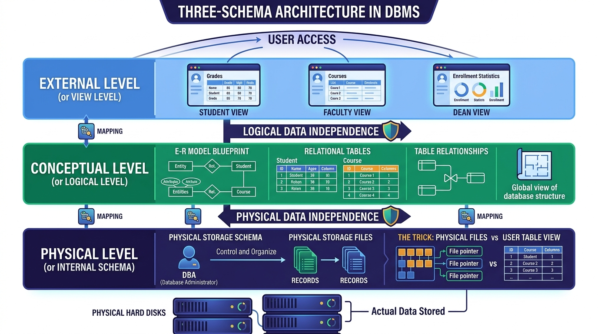

Three-Schema Architecture & Data Abstraction
Master What is Three-Schema Architecture, why it was introduced in 1970, the 3 levels (External, Conceptual, Physical), Gmail & University management examples, and the famous "Files vs Tables" DB Trick.
💡 1. What is Schema & Why Three-Schema Architecture?
What is Schema?
The word Schema simply means Structure. It represents the structural definition of the data being stored — whether it belongs to a Student, Faculty, Indian Railways, Flipkart, or Amazon.
(1, "A", 20).To store this data in a relational database, we put it into a 2-dimensional table with defined columns:
Roll_No: Integer data type (2 bytes or 4 bytes size).Name: Varchar/String data type.Age: Integer data type.
Why Three-Schema Architecture Was Created (1970 Origin)
Introduced by ANSI/SPARC in 1970, the primary goal of this architecture is Data Independence and Data Abstraction.
- Data Independence: Decouples the user from the underlying physical storage so they do not interact directly with raw disk files.
- Data Abstraction: Hiding internal storage details, file formats, and physical server locations from the end user.
🖼️ Visual Diagram: Three-Schema Architecture (Gate Smashers Model)
The diagram below illustrates the 3 layers placed between the End User and the Physical Storage Database:

🏗️ 2. Detailed Breakdown of the 3 Levels
1. External Schema (or View Level) 👁️
The View Level describes how data is represented and shown to different users. It is the top layer closest to the end user.
- Student View: Student logs in → sees their own Marks, Attendance, and Fee Structure. Marks are read-only (authorized to view, cannot edit/update).
- Faculty View: Faculty logs in → sees class attendance registers, enters/updates student marks, applies for leave, and checks their own salary.
- Dean View: Dean logs in → has higher authorization to view university-wide performance reports across all departments.
Security & Authorization: Views enforce role-based authorization so users only access data they are permitted to see. Front-end developers working on HTML, PHP, Java, or React operate at this External View Level.
2. Conceptual Schema (or Logical Level) 🧩
The Conceptual Level describes WHAT data is stored in the entire database and WHAT RELATIONSHIPS exist among tables.
- Tables & Entities: Defines entity tables like
Student,Faculty,Course, andLibrary_Book. - Relationships Between Tables: Defines how tables connect. For example, the
Studenttable andCoursetable are interconnected because Students study Courses. - Modeling Tools: Conceptual schemas are designed using the E-R Model (Entity-Relationship Diagram) and Relational Schemas.
Who Works Here? Database Designers work at the Conceptual Level to build the logical database blueprint.
3. Physical Schema (or Internal Level) ⚙️
The Physical Level (Internal Schema) describes WHERE and HOW data is physically stored on secondary storage drives (hard disks, SSDs).
- Details Handled: Physical storage paths, drive partitions, file structures, record indexing (B-Trees, Hashing), block sizes, and data fragmentation.
- Storage Deployment: Data can be stored in Centralized mode (all data on one server) or Distributed mode (data distributed across multiple global cloud servers).
Who Works Here? The Database Administrator (DBA) who administers the physical servers and storage infrastructure.
⚡ 3. The Biggest Student Confusion Point: "Files vs Tables" Trick
When you check Indian Railways train availability or search products on Flipkart, you see data presented in neat 2-Dimensional Tables (with columns like Train_No, Train_Name, Departure, Arrival).
TRICK: In reality, inside the hard disk, data is NOT stored as a visual table! Hard disks only store raw binary/flat FILES.
The DBMS software places a management layer over raw disk files and dynamically converts file records into 2D table views for the user. The Physical Schema handles file storage, while the DBMS displays it as tables!
⚖️ Summary Table: 3 Levels, Roles & Working Interfaces
| Architecture Level | Other Name | Key Focus | Working Professionals | Tools / Technologies Used |
|---|---|---|---|---|
| External Level | View Level | How data is presented to users (Views & Security Authorization) | Front-End Developers | HTML, PHP, Java, React, Web Portals |
| Conceptual Level | Logical Level | Global blueprint (Tables, Attributes, Relationships) | Database Designers | E-R Diagrams, Relational Schemas |
| Physical Level | Internal Level | Physical storage location, files & disk allocation | Database Administrator (DBA) | Storage Engines, B-Trees, Files, Servers |
🎯 GATE, UGC-NET & IT Officer — Exam Takeaways
Q1: What is the main motive of the Three-Schema Architecture introduced in 1970?
👉 Answer: To achieve Data Independence and Data Abstraction.
Q2: What is a Schema in DBMS?
👉 Answer: Schema means Structure (the blueprint defining table columns, data types, and relationships).
Q3: Which level of schema defines table relationships and E-R diagrams?
👉 Answer: Conceptual Schema (Logical Level).
Q4: Is data physically stored as tables inside a hard disk?
👉 Answer: No! Data is stored physically as FILES on disk. DBMS dynamically converts file records into table views for users.
Q5: Which professional role works at the External View Level?
👉 Answer: Front-End / UI Developers creating web/mobile interfaces.